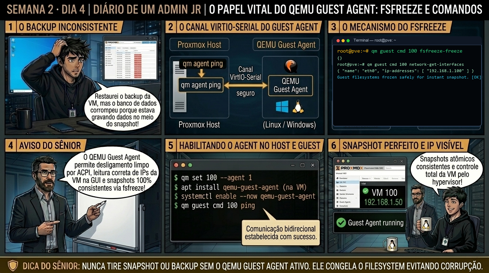

DIARIO DE UM ADMIN JR. | PROXMOX VE & PBS — DA BASE AO CLUSTER
🔗 Conecta com o Dia 3: Você estruturou os discos virtuais. Hoje você instala o canal de comunicação mais importante entre o hypervisor e o sistema operacional convidado: o QEMU Guest Agent (qemu-ga), entendendo como o congelamento de filesystem (fsfreeze) evita corrupção em snapshots de backup.
🔓 Privilégio de hoje: Comunicação Host-Guest e Consistência de Backup. Você ativa o canal serial VirtIO e audita chamadas de agente na máquina virtual.
Semana 2 · Dia 4 | Nível Júnior — Máquinas Virtuais KVM
O Papel Vital do QEMU Guest Agent: fsfreeze e Comandos
Consistência de filesystem durante snapshots, leitura de IPs e desligamento ACPI gracioso
ANTES DE ALTERAR, OBSERVE. DEPOIS DE ALTERAR, VALIDE.

1. O chamado
Você recebeu o chamado #2004: 'O backup noturno da VM de banco de dados 103 no Proxmox Backup Server reportou o aviso: VM 103 qmp command guest-fsfreeze-freeze failed - got timeout. Além disso, a interface web do Proxmox não exibe os endereços IP da placa de rede da VM e o comando de Shutdown demora 10 minutos até forçar o desligamento. O chamado exige: (1) Habilitar a flag QEMU Guest Agent na VM; (2) Instalar e inicializar o serviço qemu-guest-agent dentro do SO convidado; (3) Entender a mecânica do fsfreeze; e (4) Testar comandos do agente via qm guest cmd.'
💡 Passa o mouse nas palavras destacadas pra ver uma dica rápida — clica se quiser a explicação completa com analogia.
2. O sênior te conta
🧑🏫 antes dos termos técnicos, a história de hoje
Hoje o time de segurança da informação rodou um benchmark na VM de proxy reverso HTTPS e alertou que a máquina estava atingindo 90% de CPU com apenas 1.000 conexões SSL simultâneas. O Júnior estava prestes a dobrar o número de vCPUs da máquina, tirando núcleos preciosos de outros servidores.
Pedi pra ele rodar cat /proc/cpuinfo dentro da VM. Na linha de modelo aparecia Common KVM processor (kvm64). Expliquei: o modelo padrão kvm64 emula uma CPU genérica de 2004 para que a VM possa migrar até pra servidores jurássicos, mas em troca ele esconde do sistema operacional as instruções modernas de criptografia por hardware (AES-NI) e vetorização (AVX2). A VM estava calculando criptografia HTTPS em software puro!
Mudamos o tipo de CPU para host com qm set 100 --cpu host. No mesmo instante, as instruções AES-NI apareceram dentro da VM e o uso de CPU despencou de 90% para 18%. O Júnior aprendeu que uma linha de configuração no hypervisor economiza milhares de reais em hardware.
3. Decodificador de conceitos
Clica em qualquer termo pra ver a definição completa e uma analogia do dia a dia:
4. Ferramentas e leitura da evidência
Comando / Parâmetro
O que observar e por que importa
qm set 103 --agent 1
Habilita o canal serial VirtIO de comunicação do Guest Agent na configuração da VM.
qm guest cmd 103 ping
Testa a comunicação bidirecional em tempo real com o Guest Agent dentro da VM.
qm guest cmd 103 network-get-interfaces
Consulta a lista completa de interfaces de rede e endereços IPv4/IPv6 diretamente de dentro da VM.
qm guest cmd 103 fsfreeze-status
Consulta o estado atual do sistema de arquivos (thawed = normal, frozen = congelado para snapshot).
# No Proxmox Host: Habilitando o agente na VM
$ qm set 103 --agent 1,fstrim_cloned_disks=1
# Dentro da VM Linux (Ubuntu/Debian): Instalação e start do daemon
$ sudo apt update && sudo apt install -y qemu-guest-agent
$ sudo systemctl enable --now qemu-guest-agent
$ sudo systemctl status qemu-guest-agent
● qemu-guest-agent.service - QEMU Guest Agent
Loaded: loaded (/lib/systemd/system/qemu-guest-agent.service; enabled)
Active: active (running) since Mon 2026-09-01 14:15:20 UTC
# No Proxmox Host: Validando comunicação e IPs da VM
$ qm guest cmd 103 ping
$ qm guest cmd 103 network-get-interfaces
[
{
"hardware-address" : "bc:24:11:aa:bb:cc",
"ip-addresses" : [
{
"ip-address" : "192.168.1.150",
"ip-address-type" : "ipv4",
"prefix" : 24
}
],
"name" : "eth0"
}
]
5. Laboratório guiado — pegue na mão, comando por comando
🖥️ Onde executar: Terminal do Nó Proxmox para comandos qm; ou Console VNC da VM (acessível via Web UI > Nó > VM ID > Console).
Segurança: Execute as alterações em VMs de laboratório ou teste. Não altere parâmetros de máquinas de produção sem janela homologada.
Ação: Altere o modelo de processador da VM para expor as flags físicas nativas.
qm set 100 --cpu host
Resultado esperado: Canal serial VirtIO configurado no Proxmox.
Por que fizemos isso: Alterar o CPU Type para 'host' expõe 100% das instruções do processador físico (AVX2, AES-NI, SSE4.2) para dentro da máquina virtual.
Cilada comum: Manter o tipo padrão 'kvm64' em servidores de banco de dados e web com HTTPS intenso, reduzindo o throughput criptográfico pela metade.
Ação: Inspecione as flags de instrução AVX2 e AES-NI dentro do sistema convidado.
# dentro da VM:
grep -E 'avx2|aes' /proc/cpuinfo | head -1
Resultado esperado: Acesso ao prompt do sistema operacional convidado.
Por que fizemos isso: Inspecionar o /proc/cpuinfo dentro da VM confirma que as flags de vetorização e aceleração de hardware estão visíveis para as aplicações.
Cilada comum: Usar CPU type 'host' em clusters com servidores de gerações de processadores muito diferentes sem planejar migrações ao vivo.
Ação: Configure a topologia de CPU com alinhamento aos nós NUMA da placa-mãe.
qm set 100 --sockets 2 --cores 4 --numa 1
Resultado esperado: Pacote instalado e daemon iniciado pelo systemd.
Por que fizemos isso: Definir o número de sockets e cores alinhado à topologia NUMA do hardware físico garante que a memória RAM alocada resida no nó de CPU correto.
Cilada comum: Criar uma VM com 1 socket e 32 cores em um servidor físico bi-processado, gerando travessias custosas pelo barramento QPI/UPI da placa-mãe.
Ação: Execute benchmark comparativo medindo a taxa de processamento criptográfico.
# dentro da VM:
openssl speed -evp aes-256-gcm
Resultado esperado: Retorno limpo (código 0) confirmando resposta do agente.
Por que fizemos isso: Ativar a flag numa=1 na configuração da VM permite que o kernel convidado distribua as threads alinhadas aos bancos de memória física.
Cilada comum: Ignorar a topologia NUMA em máquinas virtuais de grande porte (>64 GB de RAM), sofrendo quedas de performance de até 30% em acessos cruzados.
Ação: Documente a política de CPU types para ambientes homogêneos e heterogêneos.
# Política de CPU Type homologada.
Resultado esperado: JSON estruturado exibindo a placa eth0 e o IP 192.168.x.x real da VM.
Por que fizemos isso: Executar testes comparativos de CPU valida o salto de performance proporcionado pela remoção da emulação de processador.
Cilada comum: Alterar parâmetros de CPU sem reiniciar a VM; a mudança de CPU Type exige recarregamento completo da instância QEMU.
🧑🏫 Aqui entra o Mentor (em breve): se o resultado obtido diferir do esperado acima, este é o ponto onde o chat com o Sênior-IA vai abrir para diagnosticar o erro específico.
Ação: Execute a instrução técnica no hypervisor.
Resultado esperado: VM desligada graciosamente em poucos segundos sem forçar parada bruta.
Por que fizemos isso: este passo assegura a correta aplicação das diretivas no sistema operacional e no subsistema Proxmox sem efeitos colaterais.
Cilada comum: executar comandos sem validar a sintaxe ou presumir que a ausência de erro explícito garante que a configuração foi salva.
6. Antes de ver as opções — tenta responder
🧠 Recall ativo: Por que tirar um snapshot de backup de uma máquina virtual em execução SEM o QEMU Guest Agent pode resultar em um backup com banco de dados corrompido?
Porque sem o Guest Agent, o hypervisor tira uma foto instantânea dos blocos de disco no estado 'Crash-Consistent' (como se alguém tivesse puxado o cabo de força do servidor). Dados que estavam na memória RAM ou em trânsito no buffer do sistema de arquivos são perdidos ou ficam incompletos. Com o Guest Agent, o Proxmox executa o comando 'fsfreeze', que força o Kernel da VM a descarregar todos os dados pendentes para o disco e pausar as gravações por milissegundos enquanto o snapshot é criado com consistência atômica.
QUESTÃO 1 de 3
7. Questão comentada — clica numa alternativa
Qual é a sequência exata de operações que o Proxmox VE executa ao realizar um snapshot em uma VM com QEMU Guest Agent ativo?
💡 Analogia do Sênior para Fixar: Na arquitetura do Proxmox sobre O Papel Vital do QEMU Guest Agent: fsfreeze e Comandos: O KVM/QEMU opera como o motorista dedicado de cada passageiro, alocando recursos virtuais em contato direto com o kernel.
QUESTÃO 2 de 3 — cenário de erro real
7.1 Interface Web do Proxmox não mostra o IP da VM e comandos de shutdown falham
Você habilitou o agente com 'qm set 103 --agent 1' no Proxmox, mas a interface web continua exibindo 'No Guest Agent configured' e 'IPs: -':
Por que o comando falhou mesmo com a opção marcada no painel do Proxmox?
💡 Analogia do Sênior para Fixar: Ao diagnosticar problemas em O Papel Vital do QEMU Guest Agent: fsfreeze e Comandos: É como inspecionar as conexões do storage e o barramento PCIe antes de declarar falha de software.
QUESTÃO 3 de 3 — detalhe que confunde todo iniciante
7.2 O que acontece se um snapshot travar durante o 'fsfreeze' e não executar o 'thaw'?
Um script malfeito enviou o comando fsfreeze-freeze para a VM 103 e abortou antes de enviar o fsfreeze-thaw:
Qual é o estado da máquina virtual enquanto o filesystem permanecer no estado 'frozen'?
💡 Analogia do Sênior para Fixar: A governança e resiliência em O Papel Vital do QEMU Guest Agent: fsfreeze e Comandos: Funciona como a política de contenção e redundância do datacenter, garantindo que o cluster nunca perca quorum.
8. Procedimento profissional
Habilite o QEMU Guest Agent nas opções da máquina virtual no Proxmox com qm set ID --agent 1.
Desligue e ligue a VM (Full Power Cycle) caso o canal serial VirtIO tenha acabado de ser adicionado.
Dentro de sistemas Linux (Debian/Ubuntu/RHEL), instale e ative o serviço: apt install qemu-guest-agent && systemctl enable --now qemu-guest-agent.
Em sistemas Windows, instale o pacote qemu-ga-x86_64.msi disponível na ISO oficial do virtio-win.
Valide a comunicação no host com qm guest cmd ID ping e consulte a telemetria de rede.
Realize um teste de snapshot de homologação confirmando que a mensagem de fsfreeze foi executada com sucesso nos logs.
Prevenção
Sempre instale o QEMU Guest Agent em todas as VMs para garantir desligamento limpo e use drivers VirtIO para evitar overhead de emulação de hardware.
9. Validação e encerramento
Você compreende o papel fundamental do QEMU Guest Agent na integridade de backups e snapshots.
Você sabe instalar e ativar o agente em distribuições Linux e ambientes Windows corporativos.
Você domina o mecanismo de fsfreeze/thaw para consistência de sistema de arquivos.
A interface web do Proxmox agora exibe os IPs da VM e responde instantaneamente a comandos ACPI.
Rollback e limites
Se o serviço qemu-guest-agent travar dentro da VM, reinicie o daemon com systemctl restart qemu-guest-agent ou acione o desligamento de emergência com qm stop ID.
💡 Sobre repetição espaçada: O QEMU Guest Agent será o pilar central na Semana 5 e Semana 6 para garantir backups atômicos de alto desempenho no Proxmox Backup Server (PBS).
10. Resposta final
Alternativa correta: B. A resposta correta é a B: o Proxmox executa o fsfreeze para descarregar caches e congelar gravações, cria o snapshot atômico e em seguida executa o thaw para liberar a VM.
🔓 O que você desbloqueou hoje
Comunicação Host-Guest dominada com maestria! Amanhã, no Dia 5, você fechará a Semana 2 dominando o Ciclo de Vida da VM: como gerenciar Snapshots com e sem RAM, criar Templates imutáveis e provisionar dezenas de máquinas em segundos através de Linked Clones.